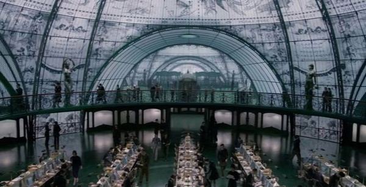

Próximos Muggles en el Ministerio…¿Un caos delicioso?
Un caos delicioso: así describe la Ministra Hermione Granger las responsabilidades del Departamento de Accidentes y Catástrofes Mágicas del Ministerio.
Desde un kelpie, que fue etiquetado por error como el monstruo del Lago Ness de Irlanda en 1933, hasta el "ajuste del patrón de sueño" de miles de búhos cuando se difundió la noticia de la derrota de Voldemort, e incluso a través de múltiples avistamientos de Yeti en el Tíbet, solo el último siglo ha sido un viaje salvaje para los funcionarios de ocultamiento mágico del mundo.
Desde la creación del Estatuto Internacional del Secreto a finales del siglo XVII, se han producido millones de incidentes en los que muggles se han visto confundidos por sus interacciones con la magia. De hecho, en el Ministerio, gran parte de nuestro trabajo se dedica a ocultar y proteger a los muggles de la magia.
Cada sección es vital para asegurar una relación positiva con los muggles y contribuye a crear un equilibrio entre nuestros dos mundos radicalmente diferentes, pero a menudo convergentes. Sin embargo, en los siglos que el Ministerio ha residido bajo Whitehall, en Londres, ningún muggle ha entrado jamás sin querer en los confines de su sede.
No hace falta decir que a este muggle no le hizo muy bien el descubrimiento del mundo mágico y las criaturas que lo acompañan. Afortunadamente, algunos funcionarios de la oficina de Enlace Muggle se estaban preparando para partir y acababan de llegar cuando se desarrolló la escena. Unas cuantas brujas y magos les ayudaron a trasladar al muggle a donde sólo podemos sospechar que está el Departamento de Accidentes y Catástrofes Mágicas.
Por el momento, salvo el comentario de la ministra Granger sobre el delicioso caos, se ha abstenido de dar más información. Sin embargo, aseguró a El Profeta que se publicarán más detalles pronto, una vez que la investigación tenga hallazgos más concretos. Por ahora, este incidente ha dejado al mundo de la magia con una pregunta vital: ¿Por qué la chimenea de un muggle estaba conectada a la red flu y fue por accidente o intencionalmente?
¿Por qué la chimenea de un muggle estaba conectada a la red flu y fue por accidente o intencionalmente?